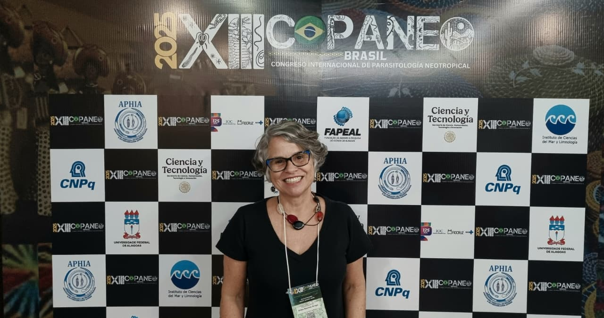
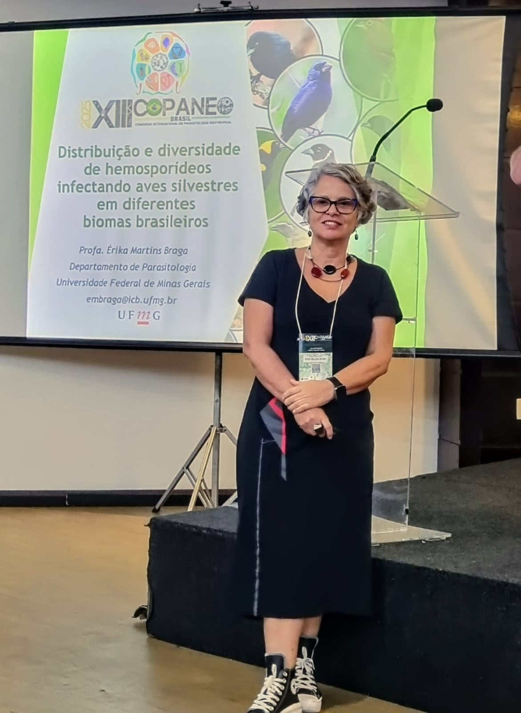

(2).png "Laboratório Malária UFMG")

profa. Érika M. Braga (Departamento de Parasitologia/ICB-UFMG) durante o COPANEO
Distribuição e diversidade de hemosporídeos infectando aves silvestres em diferentes biomas brasileiros
O Grupo de Estudos Interdisciplinares em Malária (GIEM), da UFMG, participou do Congreso Internacional de Parasitología Neotropical (COPANEO) apresentando um painel abrangente sobre a distribuição e diversidade de hemosporídeos em aves silvestres que habitam diferentes biomas brasileiros. A conferência foi conduzida pela profa. Érika M. Braga (Departamento de Parasitologia/ICB-UFMG), que sintetizou duas décadas de investigação contínua do grupo.
O estudo reúne mais de 10 mil aves analisadas em Cerrado, Mata Atlântica e Caatinga, com foco na caracterização morfológica e molecular de protozoários da ordem Haemosporida — especialmente dos gêneros Plasmodium e Haemoproteus, e, mais recentemente, Leucocytozoon. Os resultados indicam elevada diversidade parasitária, intimamente relacionada à complexidade dos ecossistemas e à variação de hospedeiros.
A equipe destacou o uso de abordagem integrativa, combinando taxonomia clássica com marcadores mitocondriais e sequenciamento completo do DNA mitocondrial, o que vem possibilitando a descrição de novas espécies de hemosporídeos no país. Paralelamente, o GIEM investiga fatores bióticos e abióticos que modulam a ocorrência e a distribuição desses parasitos, oferecendo um quadro mais preciso da dinâmica de transmissão em cada bioma.
Segundo a coordenação, o avanço obtido aprofundou a compreensão das interações parasito–hospedeiro e fornece subsídios práticos para estratégias de manejo e conservação da avifauna silvestre. “O Brasil, com sua riqueza de aves e vetores, é um laboratório natural para compreender como o habitat influencia a circulação desses patógenos. Transformar esse conhecimento em políticas e práticas de conservação é a nossa prioridade”, afirmou a profa. Érika Braga durante a apresentação.
Com a participação no COPANEO, o GIEM reforça seu compromisso com a produção de ciência aberta, rigor metodológico e impacto aplicado, consolidando-se como referência regional no estudo de hemoparasitos de aves e suas implicações para a biodiversidade neotropical.

Professora Erika durante sua apresentação “Distribuição e diversidade de hemosporídeos em aves silvestres que habitam diferentes biomas brasileiros”.